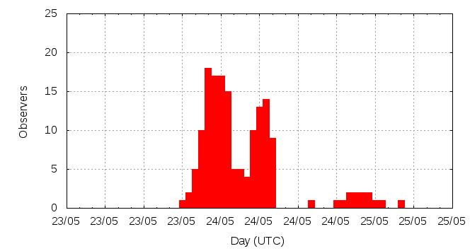

[ www.imo.net ]
This page shows automated results of the 2014 Camelopardalids, based on visual observations reported by citizen scientists through the report form of the International Meteor Organization (IMO). The information on this page is generated automatically; for scientific use please refer to manual analyses published in scientific journals (such as WGN). Send your feedback regarding this page to Geert Barentsen.
Page contents:
Note that the data will finally go into the Visual Meteor Database (VMDB) with manual inspection and rectifications. We are curretly completing the files of 2008-2011. The VMDB is an enormous project - any help will be greatly appreciated.
Page generated: 2014 August 7 at 20:45 UTC.
The graph below shows the ZHR (Zenithal Hourly Rate), which is the number of meteors an observer would see under a very dark sky with the radiant of the shower in zenith.
ZHRmax = 20 based on 142 Cameleopardalids reported in 162 intervals, assuming population index r = 2.0

| Time (UTC) | Solarlon | nINT | nCAM | ZHR | Particle density | |
|---|---|---|---|---|---|---|
| 2014-05-23 22:19 | 62.500 | 40 | 23 | 3 | ±1 | 9 / 109·km3 |
| 2014-05-24 00:31 | 62.589 | 20 | 15 | 5 | ±1 | 14 / 109·km3 |
| 2014-05-24 01:28 | 62.627 | 19 | 15 | 8 | ±2 | 23 / 109·km3 |
| 2014-05-24 04:45 | 62.758 | 21 | 19 | 5 | ±1 | 14 / 109·km3 |
| 2014-05-24 06:16 | 62.819 | 8 | 15 | 11 | ±3 | 31 / 109·km3 |
| 2014-05-24 06:42 | 62.836 | 7 | 15 | 19 | ±5 | 54 / 109·km3 |
| 2014-05-24 07:08 | 62.854 | 11 | 15 | 11 | ±3 | 31 / 109·km3 |
| 2014-05-24 07:46 | 62.879 | 11 | 16 | 9 | ±2 | 26 / 109·km3 |
| 2014-05-24 08:21 | 62.902 | 3 | 7 | 20 | ±7 | 57 / 109·km3 |
| 2014-05-24 22:55 | 63.485 | 22 | 2 | 1 | ±1 | 3 / 109·km3 |
The reported intervals are automatically added together into the bins shown above, based on the number of meteors and the distribution of the intervals. For each bin, the following parameters are computed:
Data has been received from 47 observers in 22 countries. Thank you for your efforts!
Note: click on the map for an interactive version.

| Observer | Country | Teff | nCAM |
|---|---|---|---|
| Tomasz Adam | Poland | 2.35h | 0 |
| Jose Alvarellos | United States | 1.00h | 1 |
| Orlando Benitez Sanchez | Spain | 0.63h | 1 |
| Jens Briesemeister | Germany | 4.50h | 1 |
| Mark Davis | United States | 3.00h | 16 |
| Michel Deconinck | France | 0.89h | 2 |
| Peter Detterline | United States | 4.55h | 5 |
| Jose Vicente Díaz Martínez | Spain | 0.08h | 2 |
| Audrius Dubietis | Lithuania | 1.20h | 0 |
| Shy Halatzi | Israel | 3.00h | 3 |
| Carl Hergenrother | United States | 2.17h | 3 |
| Glenn Hughes | United States | 0.33h | 1 |
| Richard Huziak | Canada | 2.75h | 2 |
| Jens Lacorne | France | 3.31h | 4 |
| Michael Linnolt | United States | 0.40h | 0 |
| Boris Majic | Serbia | 2.16h | 0 |
| Roman Makhnenko | Russia | 1.08h | 0 |
| Aleksandar Matic | Serbia | 1.92h | 0 |
| Bruce Mccurdy | Canada | 1.00h | 0 |
| Jaroslav Merc | Slovakia | 2.53h | 2 |
| Vasilis Metallinos | Greece | 1.80h | 1 |
| Milen Minev | Bulgaria | 2.24h | 7 |
| Arash Nabizadeh Haghighi | Iran | 0.50h | 0 |
| Michael Nolle | Malta | 1.10h | 0 |
| Ella Ratz | Israel | 1.48h | 1 |
| Kai Schultze | Germany | 1.95h | 4 |
| Miguel Angel Serra Martin | Spain | 3.80h | 5 |
| Wesley Stone | United States | 3.25h | 11 |
| Richard Taibi | United States | 3.15h | 3 |
| Tamara Tchenak | Israel | 2.16h | 3 |
| Sonal Thorve | India | 1.33h | 1 |
| Koen Miskotte | Netherlands | 5.39h | 3 |
| Tomasz Lenart | Poland | 2.50h | 2 |
| Pierre Martin | Canada | 4.33h | 20 |
| Alexsandr Morozov | Russia | 2.34h | 0 |
| Maciek Myszkiewicz | Poland | 2.08h | 2 |
| Salvador Aguirre | Mexico | 3.50h | 5 |
| Branislav Savic | Serbia | 2.92h | 0 |
| Javor Kac | Slovenia | 1.50h | 1 |
| Pierre Bader | Germany | 3.25h | 2 |
| William Watson | United States | 1.49h | 4 |
| Alexandr Maidik | Ukraine | 2h | 0 |
| Anna Levina | Israel | 2.08h | 3 |
| Karoly Jonas | Hungary | 1.00h | 2 |
| Josep M, Trigo-rodriguez | Spain | 1.98h | 14 |
| Daniel Verde Van Ouytsel | Spain | 0.89h | 0 |
| Quan-zhi Ye | China | 2.20h | 16 |
Create your own analysis. The files below can be opened using Excel:
cam2014_rate.csv (number of meteors per interval per observer)
cam2014_magn.csv (number of meteors per magnitude bin per observer)
The information on this page may be distributed freely provided credit is given to the International Meteor Organization (IMO) and, when possible, to the individual observers. The computer facilities to generate this page are provided by ESA/RSSD and Armagh Observatory.
References: